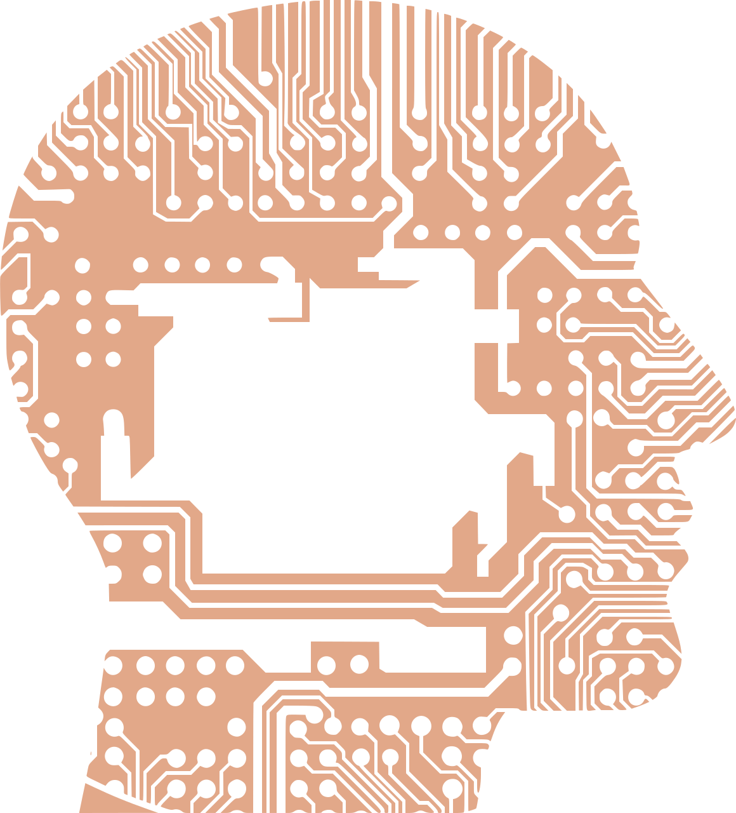

Mnenje

Menim, da digitalna pismenost v sedanjem času je koristna pri postavljenih kognitivnih in družbenih izzivih, z vsem dostopom ki jih imamo do strojne, programske opreme , do različnih vsebin in storitev. Učenci in dijaki imajo še vedno premalo znanja glede digitalne pismenosti. Ne zato, ker bi mladim manjkalo domišlije ali pobude, temveč zato, ker ustanove, ki upravljajo z dostopom do interneta in njihovo uporabo, so omejujoče ali neprimerne, kot npr. zaskrbljeni starši, negotovi učitelji. V zadnjih letih so priljubljene spletne dejavnosti ena za drugo postale težave mladim, prenašanje glasbe in filmov je privedlo do pravnih dejanj zaradi kršitve avtorskih pravic, izobraževalne ustanove vse pogosteje izpostavljajo postopke plagiatorstva (Livingstone S., Bober M., Helsper E., 2005).
Kot bivša učenka in dijakinja, menim, da je v osnovnih in srednjih šolah premalo učnih ur namenjeno spoznavanju interneta in razvijanju digitalne pismenosti, ki je iz dneva v dan bolj pomembna. V učnih načrtih je predvidena, vendar je na temu premalo poudarka, v šolah bi lahko imeli tudi svoj predmet, glede na to, da je v današnjem času vedno več poudarka na poznavanju informacijsko-komunikacijske tehnologije.